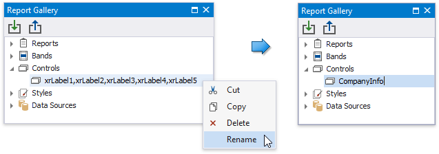

Report Gallery
The Report Gallery allows you to store and reuse reports and their elements.

Do not confuse the Report Gallery with the Report Explorer that has a similar user interface. The Report Gallery stores shared templates. The Report Explorer displays the current report structure.
Reports
The Report Gallery displays report layout templates in the Reports category.
To create a new template, right-click an empty area around the design surface and select Add To Gallery in the context menu. The report's Name property value defines the template name.
Do one of the following to apply a template to the current report:
Right-click the template in the Report Gallery and select Apply Layout to Report.

Drag and drop the template from the Report Gallery onto the report.

The following dialog warns you that the template overrides the current layout:

When you apply the report template, all the associated styles and components are added to the current report as well.
Bands
The Report Gallery's Bands category contains band templates.
To create a new template, right-click a report band and choose Add To Gallery in the context menu. The band's Name property value defines the template name.
Use the following ways to apply a band template:
Drag and Drop
Drag and drop the template from the Report Gallery onto the band of the same type to replace the band's content.
To create a new band, move the mouse cursor to the delimiter between bands and drop the template.

You can always create new Detail Report bands and Group Headers/Footers. You can add the Report Header/Footer or Page Header/Footer only if the report does not contain this band.
Gallery Context Menu
Right-click a template in the Report Gallery and choose Apply Layout to Band in the context menu.
This action's behavior depends on the template's band type and the selected report band.
Template's Band Type Action Result Detail Band, Vertical Detail Band, Top Margin, Bottom Margin Replaces the corresponding band's content independently from the selected band type. Group Header, Group Footer, Detail Report Band If the same band is selected in the report, replaces the band's content. Otherwise, adds a new band to the deepest hierarchy level. Report Header, Report Footer, Page Header, Page Footer, Vertical Header, Vertical Footer If the same band exists in the report, replaces the band's content. Otherwise, adds a new band.
Note that the template stores settings related to the band and its controls (binding information, appearance options, etc). All these settings are restored when you apply the template.
Controls
You can combine report controls from the same band into a template. Hold down SHIFT or CTRL and select controls. Then, right-click the selection and choose Add To Gallery in the context menu.

This adds a new template to the Controls section. The template name consists of control names separated by commas.
To apply a control template, drag and drop it from the Report Gallery onto a band.

All the control settings are restored when you apply the template.
Styles
Right-click a style in the Report Explorer and select Add To Gallery to create a new template in the Styles category.
Use the following ways to apply a style template:
To add the style to the report's style sheet, right-click the style in the Report Gallery and select Add to Report Style Sheet.
You can also use the same action in the Styles node's context menu to add all the styles available in the Report Gallery.
To apply the style to a specific report control, drag and drop this style from the Report Gallery onto this control. This also adds the selected style to the report style sheet if it does not already contain this style.
Data Sources
Right-click a data source in the Report Explorer and select Add To Gallery to create a new template in the Data Source category.
Do one of the following to apply a data source template:
Right-click the template in the Report Gallery and select Add to Report Data Sources in the context menu.

Drag and drop the template from the Report Gallery onto the report.
Rename Templates
To change the template name, select Rename in the template's context menu and type a new name.

Group Templates
Right-click a root Gallery node and select Add New Folder in the context menu.

Specify the folder name. Move templates to this folder to combine them into a group.

Import and Export Templates
You can import gallery items from an XML file. Right-click the Import toolbar button, locate a file in the invoked Open dialog and click OK.
To save gallery templates to an XML file, click the Export toolbar button and select a target file in the Save dialog.